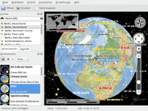
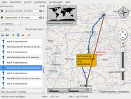
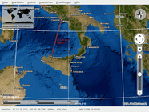
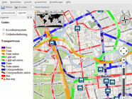
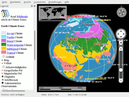
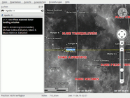
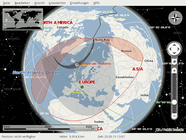
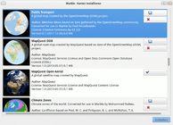

Marble
Dieser Artikel wurde für die folgenden Ubuntu-Versionen getestet:
Ubuntu 16.04 Xenial Xerus
Ubuntu 14.04 Trusty Tahr
Zum Verständnis dieses Artikels sind folgende Seiten hilfreich:
Marble  ist ein Desktop-Globus. Das Programm ähnelt dem populären Programm Google Earth, benutzt jedoch keine 3D-Hardwarebeschleunigung. Es ist schlicht gehalten, aber trotzdem ausgereift und mächtig. Es unterstützt verschiedene Kartenmaterialien, u.a. auch OpenStreetMap und kann diese auf einem Globus oder einer Landkarte abbilden. Marble ist Bestandteil des KDE-Education-Projekts und wurde erstmalig mit KDE 4.0 ausgeliefert. Marble ist auch für andere Betriebssysteme erhältlich.
ist ein Desktop-Globus. Das Programm ähnelt dem populären Programm Google Earth, benutzt jedoch keine 3D-Hardwarebeschleunigung. Es ist schlicht gehalten, aber trotzdem ausgereift und mächtig. Es unterstützt verschiedene Kartenmaterialien, u.a. auch OpenStreetMap und kann diese auf einem Globus oder einer Landkarte abbilden. Marble ist Bestandteil des KDE-Education-Projekts und wurde erstmalig mit KDE 4.0 ausgeliefert. Marble ist auch für andere Betriebssysteme erhältlich.
Installation¶
Hinweis:
Das Paket aus den offiziellen Paketquellen entspricht der Variante "Marble-KDE" der Projektseite, hängt von den KDE-Bibliotheken ab und eignet sich damit in erster Linie für Kubuntu. "Marble-Qt" ist zum Einsatz unter anderen Desktop-Umgebungen ist seit Ubuntu 13.10 wieder Bestandteil der offiziellen Paketquellen.
Folgendes Paket muss installiert [1] werden:
marble (universe)
 mit apturl
mit apturl
Paketliste zum Kopieren:
sudo apt-get install marble
sudo aptitude install marble
oder
marble-qt (universe)
mit apturl
Paketliste zum Kopieren:
sudo apt-get install marble-qt
sudo aptitude install marble-qt
Benutzung¶
|  |
| Übersicht |
Marble wird gestartet [2] über
"Programme -> Lernprogramme -> Wissenschaft -> Marble" (KDE)
"Bildung -> Marble" (Ubuntu-Varianten mit einem Anwendungsmenü)
Der erste Start dauert etwas länger, da einmalig das Kartenmaterial generiert werden muss. Dieser Schritt entfällt bei zukünftigen Programmstarts.
Navigation¶
Die Navigation in Marble ist sehr intuitiv. Links befindet sich eine Navigationsleiste, die mit F9 ein- bzw. ausgeblendet werden kann. Die Navigationsleiste enthält einen Reiter "Navigation", mit mehreren Steuerelemente zum Navigieren. So befindet sich oben ein Suchfenster, in dem man sowohl nach Orten, aber auch nach markanten geographischen Orten wie zum Beispiel Bergen (aktuell werden nur die englischen Namen unterstützt) suchen kann. Die Suchergebnisse werden direkt unterhalb des Suchfensters in einer Auswahlliste angezeigt. Bereits während des Eingebens des Suchbegriffes navigiert die Karte zum aktuell besten Suchergebnis.
Unterhalb der Suche befinden sich Pfeiltasten, über die man den Globus leicht drehen kann. In der Mitte der Pfeiltasten befindet sich ein Haussymbol, über das man zu dem Heimatort navigieren kann.
Mit der Navigationsleiste kann man auch sehr leicht in das Kartenmaterial hinein- oder herauszoomen. Dafür gibt es zum einen Schaltflächen, zum anderen einen Schieber, mit dem man fast stufenlos die Vergrößerungsstufe ändern kann.
Man kann im Kartenmaterial auch mit Hilfe der Pfeiltasten ( ← , → , ↑ und ↓ ) navigieren und mit + und - zoomen. Die Navigation mit der Maus ist ebenfalls möglich. An den Rändern des Kartenausschnitts verwandelt sich der Mauszeiger in einen Pfeil. Durch Mausklick wird die Karte in die angezeigte Richtung verschoben. Befindet sich der Mauszeiger über dem Kartenmaterial, wird ein Handsymbol angezeigt. Hier lässt sich die Karte durch Drücken der Maustaste und gleichzeitiges Bewegen der Maus verschieben. Über das Mausrad kann man zoomen.
Heimatort¶
Marble unterstützt einen Heimatort, zu dem man über Klick auf das Haussymbol im Reiter "Navigation" der Navigationsleiste navigieren kann oder durch Drücken der Pos1 auf der Tastatur. Über das Kontextmenü auf der Karte kann der Heimatort gesetzt werden. Dabei wird die aktuelle Kartenansicht gespeichert, dies schließt das Zoomlevel ein. Heimatort ist also eine einfache Möglichkeit, die Karte zu einem Anfangszustand zurückzusetzen.
Entfernungen messen¶
|  |  |
| Routenplaner | Meeresboden |
Marble kann auch benutzt werden, um Entfernungen (Luftlinie) zu messen. Dazu öffnet man das Kontextmenü an der Stelle, an der man einen Messpunkt hinzufügen will und wählt "Messpunkt hinzufügen". Diesen Schritt wiederholt man für jeden benötigten Messpunkt. Sobald man zwei Messpunkte gesetzt hat, werden diese durch eine Linie verbunden und es wird die Gesamtdistanz angezeigt. Über das Kontextmenü kann man alle Messpunkte über den Punkt "Messpunkte entfernen" wieder entfernen.
Informationen zu Orten¶
Marble ist in der Lage, zusätzliche Ortsinformationen herunterzuladen und anzuzeigen. Jeder auf der Karte gezeigte Ortsname ist zugleich ein Link, auf den man mit der Maus klicken kann. Es öffnet sich ein Kontextmenü, das zum einen die geographischen Koordinaten des Ortes anzeigt sowie den Ortsnamen noch einmal als Menüpunkt enthält. Durch einen Mausklick auf diesen öffnet sich ein Datenblatt, das nützliche Informationen wie Flagge, Kurzbeschreibung, Koordinaten, Fläche, Bevölkerung, etc. anzeigt. Zusätzlich ist Marble in der Lage, aus der Wikipedia weitere Informationen zu dem Ort herunterzuladen und diese in einem weiteren Reiter anzuzeigen.
Legende¶
In der Navigationsleiste befindet sich in einem weiteren Reiter die "Legende". Hierüber ist zum einen erklärt, was die Symbole auf der Karte bedeuten, wie man es von einer Legende erwartet. Zum anderen ist es über Checkboxen möglich zu bestimmen, welche Elemente auf der Karte angezeigt werden sollen. So kann man zum Beispiel einstellen, ob Orte, Berge oder Grenzen angezeigt werden oder nicht.
Kartenansicht ändern¶
|  |  |  |  |
| Public Transport | Klimazonen | Mond, Apollo 11 | Sonnenfinsternis |
Marble unterstützt verschiedene Kartenansichten. Das heißt, es ist möglich das Kartenmaterial und die Art der Kartenprojektion zu ändern. Dazu wählt man in der Navigationsleiste den Reiter "Kartenansicht". Hier kann man unter Projektion zwischen "Globus", "Flacher Karte" und "Mercator" auswählen. Unter Design gibt es verschiedene Designs zur Auswahl. So kann man von dem standardmäßigen Atlas Kartenmaterial auf eine Satellitenansicht wechseln. Es ist auch möglich, weiteres Kartenmaterial herunterzuladen.
Neues Kartenmaterial herunterladen¶
|  |
| Karten herunterladen ... |
Marble unterstützt das Herunterladen von neuem Kartenmaterial. Dazu öffnet man über das Menü "Datei -> Herunterladen neuer Daten..." einen Dialog zum Herunterladen neuer Karten. In diesem Dialog werden alle verfügbaren Daten für Marble angezeigt. Es wird zu jeder Karte ein kleines Vorschaubild angezeigt. Unterhalb diesem befindet sich ein Button zum Installieren dieser Karte. Durch einen Klick auf diesen Button wird das Material heruntergeladen und installiert.
Wurde eine Karte bereits installiert, so wird ein Häkchen vor dem Namen des Kartenmaterials angezeigt und anstatt des Buttons zum Installieren wird ein Button zum Deinstallieren des Kartenmaterials angeboten. Durch einen Klick auf diesen wird das Kartenmaterial vollständig entfernt.
Problembehebung¶
Unscharfe OpenStreetMap-Darstellung¶
Durch die Projektion auf einen Globus und die Skalierung der Karten von Open Street Map kann es zu einer unscharfen Darstellung der Karten in der Open Street Map Ansicht kommen. Dies kann vermieden werden, indem man die Kartenprojektion zu "Mercator" ändert und über den Reiter "Navigation" oder über die Tasten + und - zoomt.
Siehe: Marble FAQ
 Programmübersicht
Programmübersicht- Erstellt mit Inyoka
-
 2004 – 2017 ubuntuusers.de • Einige Rechte vorbehalten
2004 – 2017 ubuntuusers.de • Einige Rechte vorbehalten
Lizenz • Kontakt • Datenschutz • Impressum • Serverstatus -
Serverhousing gespendet von